白駒池・霧ヶ峰・美ヶ原旅行
| 日付 | 2011年7月21日（木） - 2011年7月23日（土） | |||||
|---|---|---|---|---|---|---|
| 山域 | 八ヶ岳 | |||||
| メンバー | 家族（妻、長女・0歳） | |||||
| 山行形態 | 子連れ2泊3日ホテル泊 | |||||
| アクセス | 車 | |||||
| ルート (Map1) |
|
今年の3月に子供が産まれて以来、初めての家族旅行。
電力不足対策での輪番休暇を利用して出かけることにする。
19日～21日で行く予定だったが、台風が直撃したため日程を変更し、
21日～23日の3日間で、避暑地の霧ヶ峰方面に向かう。
1日目
車を借りて、朝に家を出発。
まずは、八ヶ岳の麦草峠付近にある白駒池に向かう。
麦草峠は以前北八ヶ岳を縦走したときに起点とした峠だ。
14時半に駐車場に到着する。
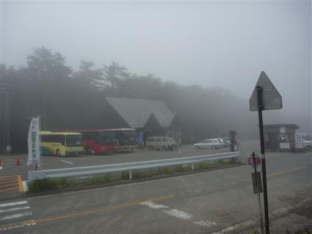
白駒池の入口。山の中は少し霧が出ている。
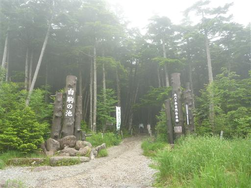
ベビーキャリアで背負って出発。
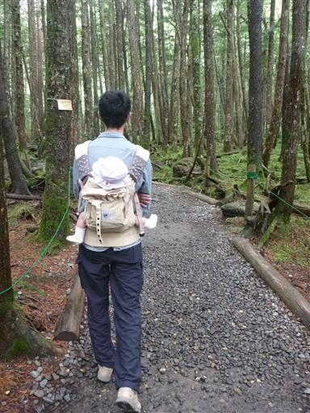
辺り一帯は苔でおおわれて、緑一色だ。
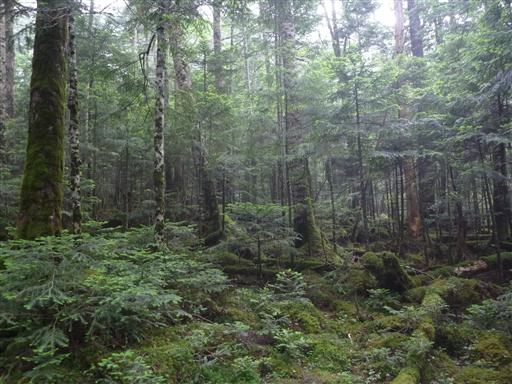
高見石と呼ばれる展望台に行ってみる。
坂を登るのは久しぶりだ。
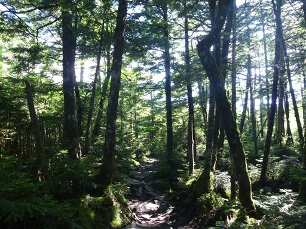
一登りで高見石小屋に到着。
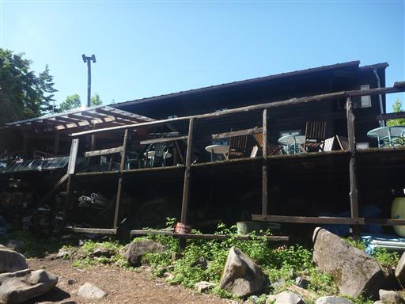
そこから先は巨岩が織り成す所だ。
岩の上を登っていくと、すぐに高見石に到着する。
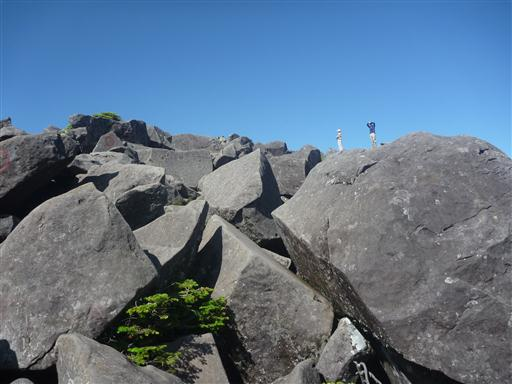
高見石からは眼下に白駒池が見渡せる。
ちょうど雲が取れてきて、最高の展望が得られる。
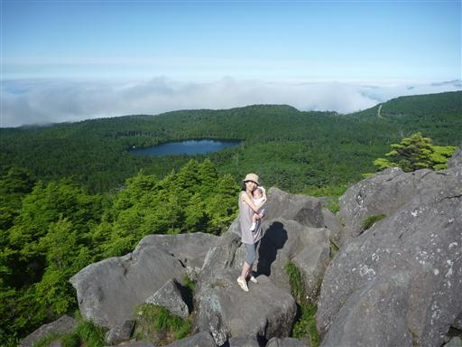
北八ヶ岳方面を望む。蓼科山が雲の合間に見えている。
目を転じると浅間山、妙高山も見えている。
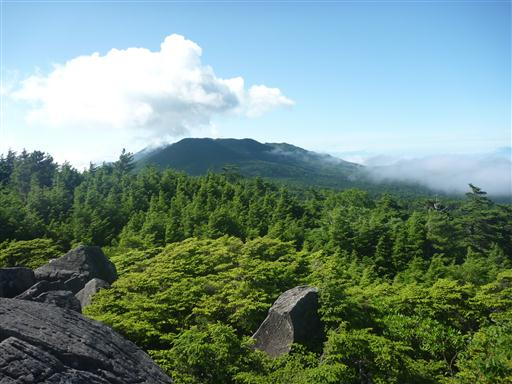
西方は雲海が続いている。
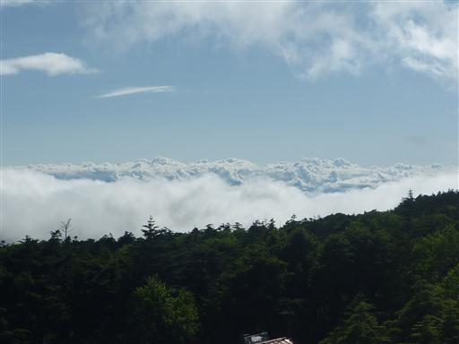
白駒池の畔まで下りてくる。
静かな水をたたえる小さな池だ。

池畔にシャクナゲの花が咲いている。
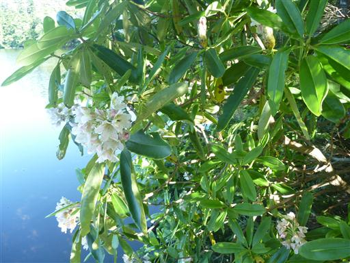
湖を左回りに一周する。
木道が整備されていて比較的歩きやすい。

この辺り一帯も深い緑色に支配されている。
まさに北八ヶ岳らしい風景だ。
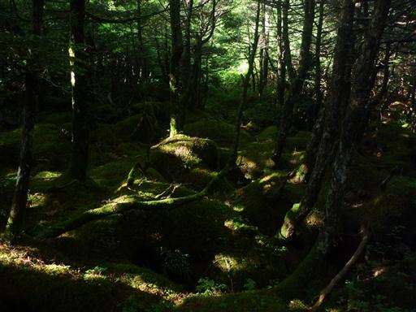
白駒池を一周し、駐車場に戻ったら宿に向かう。
宿泊は白樺湖畔に建つ水源荘を利用する。
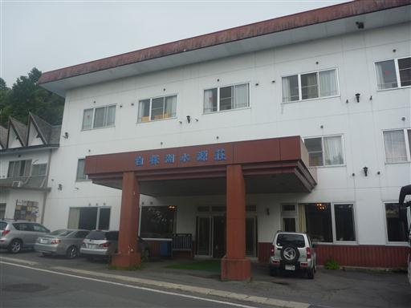